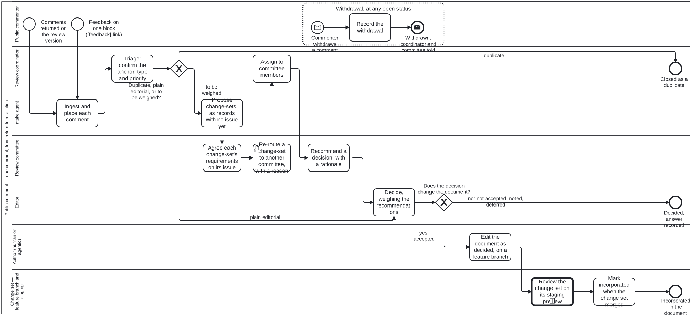

Generated from
folio-assistant-core/skills/content/folio-document-adapter/public-comment.md— do not edit here.
public-comment
Skill id:
public-comment· Package:folio-document-adapter· Process:folio-assistant-core/processes/content/public-comment.bpmn(Process_PublicComment) · Tool:folio-assistant-core/scripts/public-comment.ts· Schema:folio-assistant-core/schemas/public-comment.ts· Beanv26p, issue #197.
Run a public review of a document folio. A frozen, line-numbered draft goes out. Comments come back as spreadsheets, form exports, letters and GitHub comments. Each comment is placed on the block it is about, triaged, weighed by a review committee and decided by an editor. Where a decision changes the document, the change lands on a feature branch whose staging preview shows the text before and after.
The one fact everything rests on: a comment cites the REVIEW VERSION
A reviewer writes “§3.4.5, p.22, l.618–624”. Those numbers exist only in the PDF the reviewer read. Word computes pages and lines at layout time and stores neither. Once an editor changes the folio, the numbers no longer describe the current text.
So the review version is frozen in the library, and the folio is extracted from it in two halves:
docx-structure.pyreads the structure from the .docx: headings, lists, tables, figures, footnotes, call-out boxes.pdf-line-map.pyreads the page and line of every item from the line-numbered PDF, by matching letters only. A miss is reported, never guessed.docx-to-folio.tswrites the editable folio. Every block’smeta.sourcerecords its page, printed page and lines.review-anchors.jsonis the same index in one file, which is what the importer reads.
Never regenerate the folio over editors’ work. docx-to-folio.ts refuses
a non-empty folio without --force. The anchors keep resolving after edits,
because they point at the frozen version, not at the current text.
Read the alignment stats (pdf-line-map.json → stats) before trusting a
comment’s anchor. On the DPI-H draft, 97% of text items aligned to exact lines.
The unaligned rest are listed by method, not hidden.
Intake: one store, four routes, nothing dropped
| route | command | anchor comes from |
|---|---|---|
| comment matrix (.xlsx) | import <file> | section, page, line or Table/Figure columns |
| online-form export (.csv) | import <file> --channel online-form | the same columns, per row |
| narrative letter or email | import-narrative <file> --reviewer … | section, page/line, table or quotation in each paragraph |
| committee or editor on GitHub | the github job, from an issue or PR comment | the pc: reference |
A consolidated review log
A secretariat often keeps one workbook for the whole review: a master log, a
tab per large submission, and a contributors sheet. import reads every
sheet that holds a comment table, records the sheet on each comment, and
passes over a blank template tab. Pass --series <id> naming the log. A copy
re-sent later is a different file holding the same rows, and each comment
carries the log’s own row number (“No.”), so a re-import adds only the rows
it has not seen.
What the log already says is carried, not re-done:
- Status. “Accepted”, “Partially accepted”, “Not accepted”, “Noted” and
“Deferred” arrive decided, with the log’s disposition as the reason and
review-logas who recorded it. “Reviewed” arrives triaged. A refusal with no rationale arrives triaged and is listed as held, because the commenter is owed a reason. - Categorisations. Theme, stakeholder type, committee routing, a review
question or priority (“Q9 - Conformance and testing”, “P1”) are kept in
labels, verbatim and keyed by the column header. The three comment types staytype. - Consent. Read from the contributors sheet by name, and only the name and consent columns are read. “NAIR, Tapas” and “Tapas Nair” are one person.
Rules that are not negotiable:
- A row that resolves to nothing is
unplaced, not dropped. Triage places it (triage <ref> --to <label>) or leaves it as a general comment. - A narrative is split only where it cites something. Paragraphs that cite nothing stay together as ONE general comment. Inventing an anchor for them would put a reviewer’s words on a paragraph they never mentioned.
- Re-importing a file is a no-op. Batches are keyed by sha256.
- Privacy. The reviewer’s email is never written, and an address typed into a comment’s text is removed too. Their name is written only when they answered the acknowledgement question “Yes”. Keep the original spreadsheets OUT of the folio’s repository, because they hold emails. Record the batch, and keep the file in the review owner’s private store.
Placing a comment: how much to trust the anchor
anchor.method says how the place was found, and confidence says how far to
trust it:
caption(high): “Table 3.1” named a captioned block.page(medium or low): a page with no usable line. A lines cell such as “Requirement 5” or “A14.01” names an item, not a line, so it is not read as one. Lands on the page’s first block in the cited section.page-line(high, when the cited section agrees): the page is read as the printed page first, then as the PDF page index. Printed numbering restarts in the front matter, so the cited section breaks ties. “Section does NOT agree” inanchor.noteis a triage signal. Check the comment.quote(medium or low): a quotation found in the text. Low means it occurs more than once. The other places are incandidates.section(medium): only the section resolved, by its number or by its title or acronym (“PHSP” is the Public Health Surveillance Platform). The anchor is the section label.manual: a person placed it withreassign.
The lifecycle, and who moves it
received → triaged → assigned → recommended → decided → editing → incorporated, plus
duplicate and withdrawn. Every move is a task in public-comment.bpmn.
transition() refuses any other move. Do not edit a comment’s status by
hand: the dashboard counts statuses, and a hand-closed comment reads as
adjudicated when no one decided it.
| who (role) | does | how |
|---|---|---|
intake agent (intake) | propose change-sets as records, with no issue (below) | public-comment-changesets.ts seed, propose |
review coordinator (review-coordinator) | triage, place, mark duplicates, assign | triage, reassign, duplicate, assign |
| committee and editor | agree each change-set’s requirements, and change it, on its issue | the issue thread, and cs-* commands |
committee member (reviewer) | recommend a decision, with a rationale | a GitHub comment pc: PC-0042 / recommend: accepted-modified, or recommend |
editor (editor) | decide, with a reason unless accepted | decide: … on GitHub (editors only) or decide |
author (author), human or agentic | once a comment is dispensed with a changing decision, make the edit on a feature branch | edit <ref> --branch … [--to <login>] |
pipeline (build-pipeline) | build the change set’s staging preview, mark it incorporated on merge | staging workflow, incorporate |
Who can move a comment from GitHub. Both roles are read from the repository itself by default (owner, 2026-10-05), so nobody maintains a list:
- Editor: the repository’s owner. Only the editor decides.
- Committee: the repository’s collaborators (owner, member or collaborator). Adding someone as a collaborator on GitHub is the whole on-boarding.
GitHub marks every comment with the commenter’s relationship to the
repository, and that mark is what is checked. An editors or committee list
in config.json replaces that role’s default with exactly those logins.
Anyone may discuss a comment there, but the record is not open to everyone.
The five decision codes (owner, 2026-10-04): accepted, accepted-modified,
not-accepted, noted, deferred. Every code but accepted needs a reason,
because the commenter is owed one.
Change-sets: an issue to agree it, a PR to approve it
One editorial change often answers several comments, and one comment sometimes needs several changes. So a comment belongs to zero or more change-sets, and a change-set is discussed and made in two GitHub objects with different jobs (owner, 2026-10-05):
| object | what people do there |
|---|---|
| the change-set’s ISSUE | discuss and agree the requirements: what the document should say, which comments the change answers |
| the PR that closes it | preview the change on staging, review it, approve the merge to main |
Requirements argued on a PR get lost when it is closed and reopened; a diff argued on an issue has nothing to point at. Keep each on its own object.
One record, everything else rendered from it
review/public-comment/changesets/CS-012.json is the only record of a
change-set: title, requirements, members, status, primary issue, every other
issue that discusses it, its PR, and its history. Nothing else stores any of
that (owner: “no drift of metadata”):
- a comment’s change-sets are derived from the records, never written on the comment;
- the change-set section at the top of its issue is rendered from the record, and a hand-edit to it is put back with a pointer to the commands;
- the dashboard is built from the records. It is published per document at
<site>/en/folio-assistant-core/public-comments/<folio>/<slug>/, the handler route every viewer follows (<base>/<handler>/<kind>/<subject>, the subject being the materialised document’s path in the folio) under the page locale, with itscomments.jsonat the same route without the locale (issue #2527); the flatpublic-comments/it had until 2026-10-07 is gone, with no redirect (owner: “clean break, no deprecated/redirect links”).public-comment-route.tsis the one place that says so: the site, the change-set issues and the rendered-impact predictor all ask it.
The folio’s public-comment.yml workflow is the only writer, one run at a
time, never cancelled half-way. People and agents ask; it writes. Two gates
keep it honest: public-comment-changesets.ts check fails a PR whose records
contradict each other (no network), and the nightly reconcile re-renders every
issue from its record, opens or closes it as its status says, and opens the
issue a change-set decided outside GitHub is owed. It reports and never deletes.
The agent proposes; nobody is notified
Task_ProposeChangeSets (intake agent). An agent may draft every
change-set, and drafting one opens nothing: a proposal has no issue, so
2,000 comments do not become 300 notifications nobody asked for.
seed --out seed.jsonlists the open or decided comments in no change-set yet, bucketed by section. A bucket is not a change-set. One section’s comments usually ask for several different changes, and one change (a term used throughout, say) spans sections.- Decide the changes. One change-set is one change a reviewer can approve or refuse as a whole. Good signs: the comments ask for the same edit, or for edits that must land together. Bad signs: the title needs “and”, or the requirements list unrelated edits. Cross-cutting themes (consent, a terminology standard, normative keywords) are ONE change-set touching several sections, not one per section: when several agents draft in parallel by section, run a merge pass over their drafts before recording.
- Write requirements as what the text must do (“define actor once, in 2.1, and use it consistently”), not as the new text: the text is the PR’s job.
propose --file proposals.jsonrecords them ([{title, requirements, refs, anchor?}]), oraddone at a time. Status: proposed.
A comment the agent cannot place is left out, not forced in. It shows on the dashboard’s open, in no change-set tile.
The issue appears when somebody engages
Task_GroupChangeSets. A change-set gets its primary issue the first time
anybody engages with it (owner: “dont create issue until someone
comments/provides feedback/dispensation information”):
| what somebody does | what the workflow does |
|---|---|
presses Discuss on the dashboard (the change-set issue form, prefilled with the id) | adopts that issue as the primary one and renders the record at its top; their text stays below |
| recommends or decides on one of its comments, in any thread | records it, opens the primary issue, and quotes the tag there with a link back |
| mentions it, or one of its comments, in any issue | links that issue, and opens the primary issue (at most five from one mention; past that it replies with Discuss links instead) |
opens a PR that links it by keyword (Closes CS-012, fixes/resolves CS-012, or a cs: CS-012 line) or closes one of its issues | records the PR, opens the primary issue if there is none. A bare mention of CS-012 in prose links nothing, and a change-set already incorporated or closed is never re-linked to another PR: reopen its issue first |
| decides through the CLI | nothing at once; the nightly reconcile opens the issue |
People are disorganised, and that is fine. Any number of other issues may
discuss a change-set: each is linked (the record’s issues), listed under
Also discussed in on the primary issue, and told where the primary one is.
Nobody’s own issue is rewritten, and a tag recorded in a linked issue counts
exactly as one in the primary.
Changing a change-set on its issue
In a comment, from the committee or the editor. Anyone else’s command is answered with why it changed nothing.
| command | effect |
|---|---|
cs-add: PC-0311, PC-0312 | add comments |
cs-remove: PC-0107 | remove a comment |
cs-title: … | rename |
cs-requirements: then the text on the following lines | replace the requirements |
cs-merge: CS-087 | fold CS-087 in; its issue is linked, and closed with a pointer (or adopted, if this one had none) |
cs-split: PC-0311, PC-0312 as New title | move those comments into a new change-set, which gets its own issue |
cs-close: reason | no change is needed |
cs-new: Title with a pc: line | a new change-set (the dashboard’s New change-set from the selected comments opens the form for it) |
cs: CS-012 names the change-set where a thread discusses several. In a
change-set’s issue a bare decide: accepted (or recommend: …) applies to all
its comments; pc: PC-0042 first narrows it.
Closing a primary issue by hand while its comments still need a change reopens
it, with the list. Closing it when every comment is decided without a change
closes the change-set. Reopening a primary issue puts its change-set back to
discussing, whether it was closed or incorporated: a person reopening it
is saying it is not done. reopen <CS-012> --note "why" makes the same move
when the reopen event has already been handled.
The issue forms
public-comment-changesets.ts install writes three forms and the two
workflows into the folio’s .github/, from this layer’s templates/public-comment/.
A form renders as ### Label and the value, and the tool reads it as the same
lines a person would type, so there is one parser for both:
| form | for | reads as |
|---|---|---|
Discuss a change-set (change-set.yml) | the dashboard’s Discuss link | cs: CS-012 and the discussion |
New change-set (change-set-new.yml) | the dashboard’s picks | cs-new: Title, pc: …, cs-requirements: |
Recommend or decide (comment-decision.yml) | a person who would rather not type a tag | pc: / cs:, recommend: or decide:, the reason |
Blank issues stay enabled: a person who ignores the forms is still linked by what they mention.
The PR
- Branch from
main, named for the change. Open the PR at the first commit (continual-progress), withCloses #<the primary issue>(or any of its issues, orCloses CS-012, or acs: CS-012line) in its body. Only those keywords link: a PR that mentions the id in passing, a pin bump say, does not. - Opening it moves the change-set to editing and its accepted comments
to editing, with the branch and PR. Comments not yet decided, or decided
not-accepted/noted/deferred, do not move. - Edit the folio’s blocks. An agent in the
authorrole edits only what the decisions and the issue’s requirements say. - The staging preview is published to
STAGING/<branch>/. The dashboard links each comment’s anchor onmain(before) and on the preview (after). Seestaging-review. - Merging moves the accepted comments to incorporated. The change-set is
incorporated, and its primary issue closed, only when every comment in
it is settled (decided, incorporated, duplicate or withdrawn). If any is
still undecided, the change-set stays open and so does its issue, and the
workflow log says how many are left. Before 2026-10-06 a merge closed the
whole set regardless, which closed CS-236 and CS-237 in smart-ra with 13 of
their 15 comments undecided (bean
uphx, D-1). A PR closed without merging puts the change-set back to discussing.
The dashboard’s filters
Status, Type, Section, Search and the count tiles filter both tables: the comments, and the change-sets above them. A change-set shows when any of its comments match, and its count then reads “10 of 18”. Before 2026-10-06 they moved only the comment table, about 17,000 px below an open change-set table, so the chief editor saw filters that “did not change anything”.
- Show its comments clears every other filter and shows all of that change-set’s comments. Any later Status, Type, Section or tile choice replaces it; the search box narrows within it. (It used to persist hidden, which made the Type filter look broken: D-2.)
- Every filter change is a history entry, with the filters in the query
string (
?status=open§ion=1.1.3). Back restores the previous view, and the URL of a filtered view can be pasted into an issue or a chat. - Closed in the Status box means incorporated, duplicate or withdrawn; the page says so above the tiles.
This is the same review loop as any content change
(content-change-review.bpmn), with a different intake. Reuse it rather than
building a parallel review.
Change-sets beyond public comment
Since 2026-10-06 (owner, issue #971) the change-set is the Change Set for ANY
change to a folio: one that answers no comment has empty refs. It applies to
the materialised folio/, never to the library/ source it was materialised
from. Its PR carries rendered, one list per renderer of the rendered files
the change alters, and review approves against those lists (skill
rendered-impact).
What not to do
- Do not answer a comment by editing the review version in
library/. It is frozen, and every anchor depends on it. - Do not re-anchor by renaming a block. Labels are the anchors. A block that
is split or merged records its old label in
renamedFrom. - Do not put a decision in a commit message only. The comment record is the record. A commit is evidence.
Processes that run this skill
This skill has its own process: Public comment on a review draft.

| process | step(s) that name it |
|---|---|
| Draft, review and publish | Public comment on the review version (calls a sub-process) |
| Public comment on a review draft | Ingest and place each comment; Triage: confirm the anchor, type and priority; Propose change-sets, as records with no issue yet; Agree each change-set’s requirements on its issue; Assign to committee members; Recommend a decision, with a rationale; Decide, weighing the recommendations; Edit the document as decided, on a feature branch; Mark incorporated when the change set merges; Record the withdrawal |